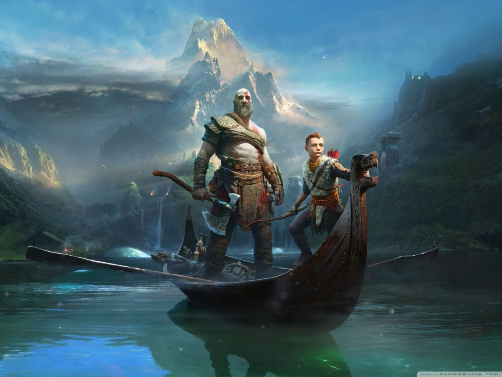
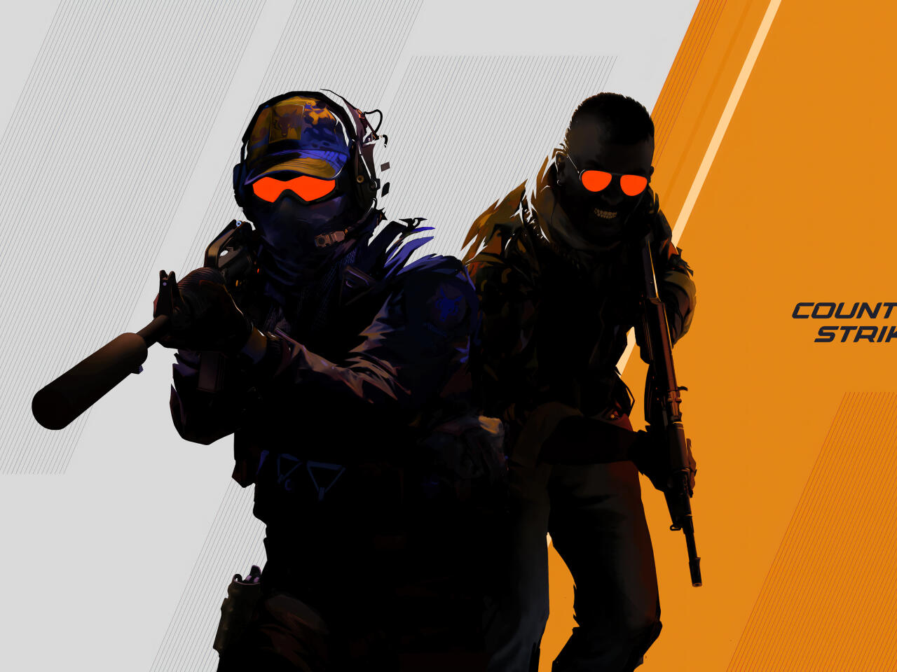
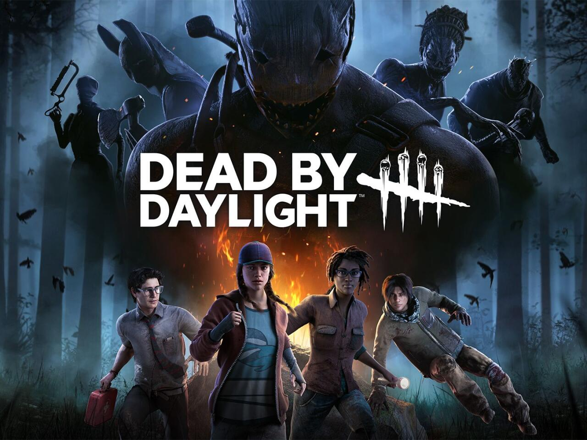

God of War: Ragnarök
Kratos e Atreus enfrentam o inevitável fim dos deuses nórdicos enquanto buscam respostas sobre o destino e o papel de Atreus como Loki. Uma jornada épica de pai e filho, marcada por batalhas intensas, dilemas emocionais e o confronto final contra o próprio Ragnarök.

Counter-Striker 2
A evolução do clássico FPS competitivo, trazendo gráficos aprimorados com a Source 2, jogabilidade refinada e sistemas atualizados de fumaça e física. Mantém o espírito estratégico e tático que consagrou a franquia, agora com uma experiência mais moderna e imersiva.

Dead By Daylight
Um jogo de terror multiplayer assimétrico onde quatro sobreviventes tentam escapar de um assassino implacável. Cada partida é um duelo de tensão e estratégia, misturando perseguições, furtividade e habilidades únicas em cenários sombrios e atmosféricos.